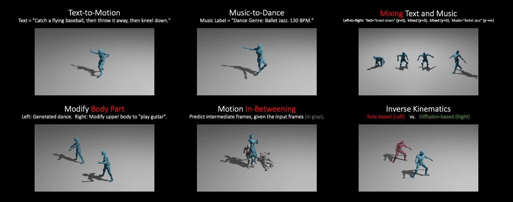

Jianxin Ma , Shuai Bai , Chang Zhou
DAMO Academy, Alibaba Group
Generative modeling of human motion has broad applications in computer animation, virtual reality, and robotics. Conventional approaches develop separate models for different motion synthesis tasks, and typically use a model of a small size to avoid overfitting the scarce data available in each setting. It remains an open question whether developing a single unified model is feasible, which may 1) benefit the acquirement of novel skills by combining skills learned from multiple tasks, and 2) help in increasing the model capacity without overfitting by combining multiple data sources. Unification is challenging because 1) it involves diverse control signals as well as targets of varying granularity, and 2) motion datasets may use different skeletons and default poses. In this paper, we present MoFusion, a framework for unified motion synthesis. MoFusion employs a Transformer backbone to ease the inclusion of diverse control signals via cross attention, and pretrains the backbone as a diffusion model to support multi-granularity synthesis ranging from motion completion of a body part to whole-body motion generation. It uses a learnable adapter to accommodate the differences between the default skeletons used by the pretraining and the fine-tuning data. Empirical results show that pretraining is vital for scaling the model size without overfitting, and demonstrate MoFusion's potential in various tasks, e.g., text-to-motion, motion completion, and zero-shot mixing of multiple control signals.
@article{ma2022mofusion,
title={Pretrained Diffusion Models for Unified Human Motion Synthesis},
author={Ma, Jianxin and Bai, Shuai and Zhou, Chang},
journal={arXiv preprint arXiv:2212.02837},
year={2022},
}